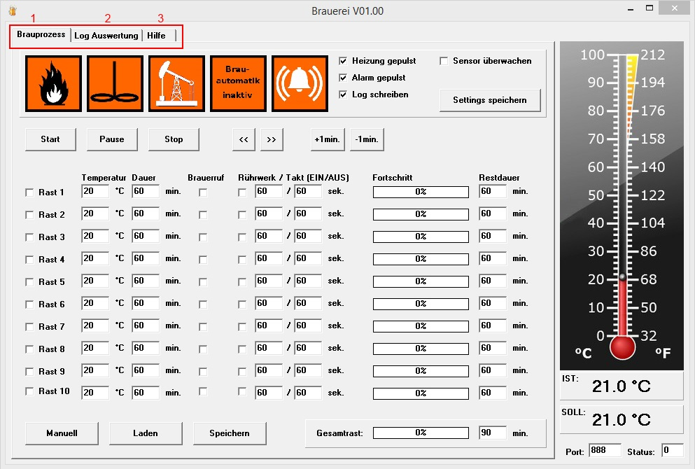

Hilfe Datei zu Brauerei V 1.00 – by Emilio
Dies ist eine erste Beta-Version meines Brauprogramms. Inspiriert dazu hat mich das prima Programm „Samba und Bier“. Mir war aber die ganze Bedienoberfläche zu unübersichtlich, die grafische Darstellung zu verspielt und auch die Bedienung etwas zu umständlich. Außerdem wollte ich wissen ob ich das hin bekomme.
Folgendes ist zu beachten:
Das
Programm wurde bisher nur mit Windows XP getestet.
Die
InpOut32.dll muss auf dem Rechner installiert sein. ←
Details
Die Programmdateien müssen sich im Verzeichnis
C:\Brauerei\ befinden.
Die
Temperaturmessung erfolgt über die Textdatei
C:\Brauerei\Temperatur\log.txt
← Details
Die Steuerung
erfolgt über den LPT-Port oder über Batchdatei-Steuerung.
Die Steuerung wird über die Textdatei
C:\Brauerei\Setup\Setup.txt
konfiguriert. ←
Details
Graphische
Anpassungen des Programms können im Ordner C:\Brauerei\Graphics\
vorgenommen werden.
Rezepte werden als *.rzt Dateien unter
C:\Brauerei\Rezepte\
abgelegt.
Brauvorgänge können geloggt werden. Logdateien
werden im Verzeichnis C:\Brauerei\Log\
als Semikolon getrennte Textdatei abgelegt.
Änderungswünsche werde ich aus Zeitgründen nur dann umsetzen, wenn ich sie für mich als sinnvoll erachte oder sie nur geringen Aufwand bedeuten. Das Programm ist in Delphi 7 programmiert. Den Quellcode stelle ich zur Verfügung. Er kann beliebig für nicht kommerzielle Zwecke weiter verwendet bzw. geändert werden. Ich bin kein Programmierer. Meine rudimentären, autodidaktisch erlernten Programmierkenntnisse habe ich zu diesem Zwecke etwas aufgefrischt. Dem Entsprechend ist auch das Programm gestrickt. Das heißt: Profi-Programmierer drücken bitte in dem Quellcode alle Augen zu. Frei nach dem Motto.... Hauptsache es funktioniert. Über ein Dankeschön von dem der das Programm oder den Quellcode benutzt würde ich mich freuen ( ich trinke auch gerne mal ein hausgebrautes Bier).
Übersicht:
Das Programm gliedert sich in drei Reiter, welche ich auf den folgenden Seiten beschreibe.
